Oficina mecânica • Viamão/RS
CUIDAMOS DO SEU CARRO
COM A PRECISÃO
QUE ELE MERECE.
Manutenção, diagnóstico e reparação automotiva com tecnologia, experiência e transparência.
- Todas as marcas e modelos
- Equipamentos modernos
- Equipe especializada
- Serviço com garantia

role para descobrir
Nossos serviços
ESPECIALISTAS EM CUIDAR
DO SEU CARRO.
Diagnóstico preciso e serviços realizados por profissionais especializados.
Tecnologia que cuida
SEU CARRO PRECISA
DE MANUTENÇÃO?
Fale com nossa equipe e solicite uma avaliação.
Solicitar orçamento pelo WhatsApp ↗TMQualidade
em movimento
em movimento
Sobre a Tech Motors
CONFIANÇA, EXPERIÊNCIA E TECNOLOGIA PARA O SEU CARRO.
A Tech Motors é uma oficina mecânica especializada em oferecer serviços automotivos com qualidade, confiança e transparência.
Atendemos veículos de diversas marcas e modelos utilizando ferramentas, equipamentos e peças de qualidade. Nossa equipe está em constante evolução para oferecer serviços dentro de altos padrões.
- Profissionais especializados
- Equipamentos modernos
- Peças de qualidade
- Atendimento transparente
O padrão Tech Motors
POR QUE ESCOLHER A
TECH MOTORS?
Diagnóstico preciso
Tecnologia e experiência para encontrar o problema corretamente.
Transparência
Você entende o serviço antes de qualquer reparo.
Qualidade
Peças e ferramentas selecionadas para garantir mais durabilidade.
Experiência
Equipe especializada e constantemente atualizada.
Como funciona
DO DIAGNÓSTICO
À ENTREGA.
Entre em contato
Agende uma avaliação
Diagnóstico do veículo
Aprovação do orçamento
Realização do serviço
Veículo pronto
Prova social
QUEM CONFIA NA TECH
MOTORS RECOMENDA.
Espaço preparado para receber avaliações reais dos nossos clientes.
★★★★★
“A avaliação real de um cliente será exibida aqui, preservando sua mensagem original.”
Avaliações reais
em breve
Este espaço será atualizado com a experiência de quem já escolheu a Tech Motors.
★★★★★
“A avaliação real de um cliente será exibida aqui, preservando sua mensagem original.”
Onde estamos
ESTAMOS EM
VIAMÃO.
⌖
R. Beira Lago, 136
Santa Isabel
Viamão - RS
◷
Segunda a sexta-feira
08:00 às 12:00
13:30 às 18:00
T
A oficina que o seu carro merece
SEU CARRO MERECE
UM SERVIÇO DE CONFIANÇA.
Entre em contato com a Tech Motors e solicite seu orçamento.